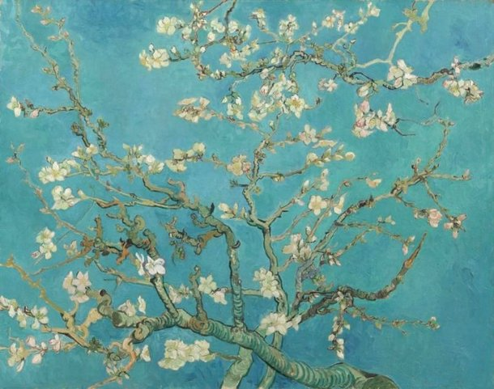
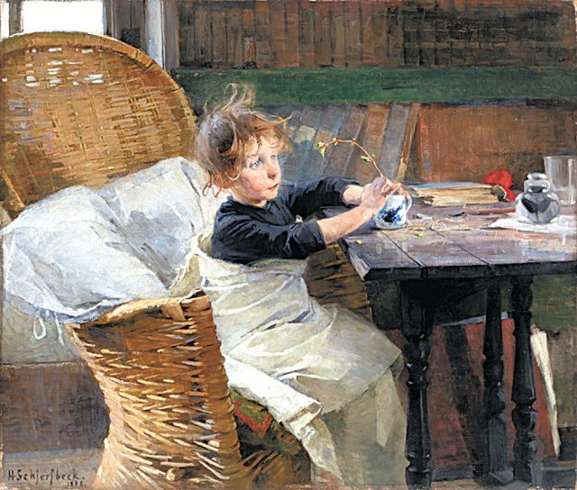
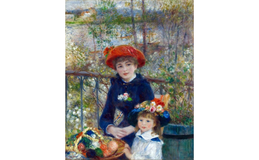
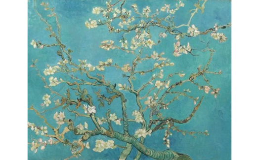
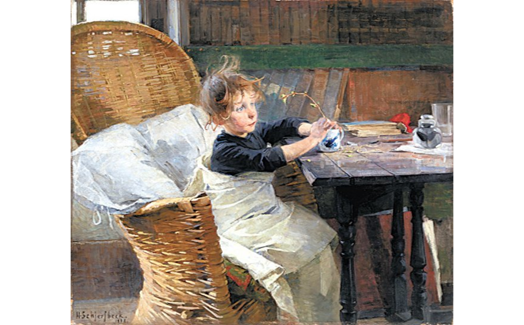

Classic : Spring

두 자매 / 테라스에서(Two Sisters or On the Terrace)
캔버스에 유채, 100.5 × 81cm, 1879년
피에르 오귀스트 르누아르(Pierre Auguste Renoir) 작
-
화조도
10첩 병풍, 종이에 채색, 86.5 x 42.5cm, 19세기
작자 미상
- 
꽃피는 아몬드 나무(Almond Blossom)
캔버스에 유채, 73.3 x 92.4cm, 1890년
빈센트 반 고흐(Vincent van Gogh) 작
- 
회복기의 환자
캔버스에 유채, 21.27 x 18.07cm, 1888년
헬렌 셰르프백(Helene Schjerfbeck) 작

보르게세 공원의 정원에서 봄을 맞은 플로라(Flora)
수채화, 29.9 x 20.3cm, 1877년
로렌스 알마 타데마(Sir Lawrence Alma Tadema) 작
-
파라솔 / 위험에 빠지다(The Parasol (in Jeopardy))
캔버스에 유채, 100 x 65cm, 1902년
아서 해커(Arthur Hacker) 작

세느강의 봄(Spring by the Seine)
캔버스에 유채, 80 x 60cm, 1875년
클로드 모네(Oscar Claude Monet) 작

파라솔을 쓴 여인 / 마담 모네와 아들
(A Walk, Woman with a Parasol)
캔버스에 유채, 100 x 81cm, 1875년
클로드 모네(Oscar Claude Monet) 작
- 

- 
- 